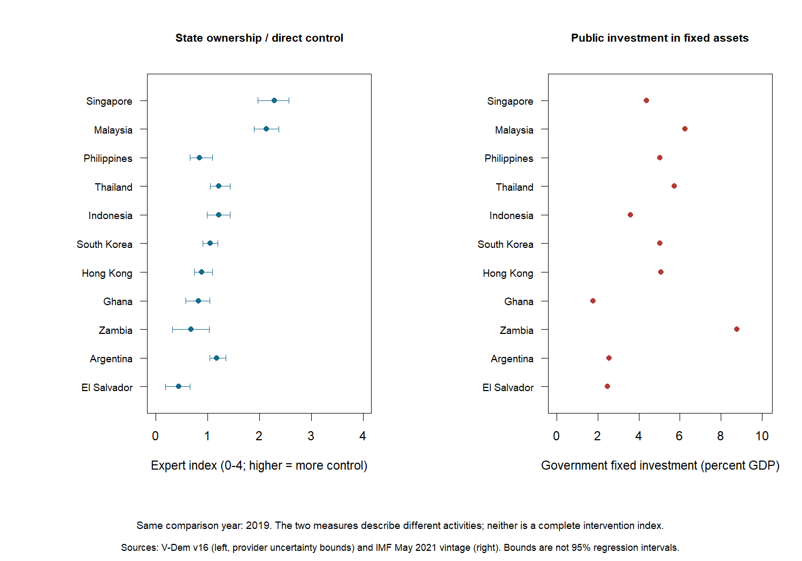
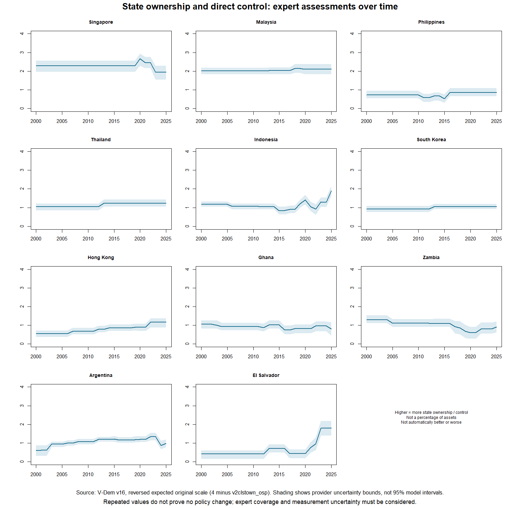
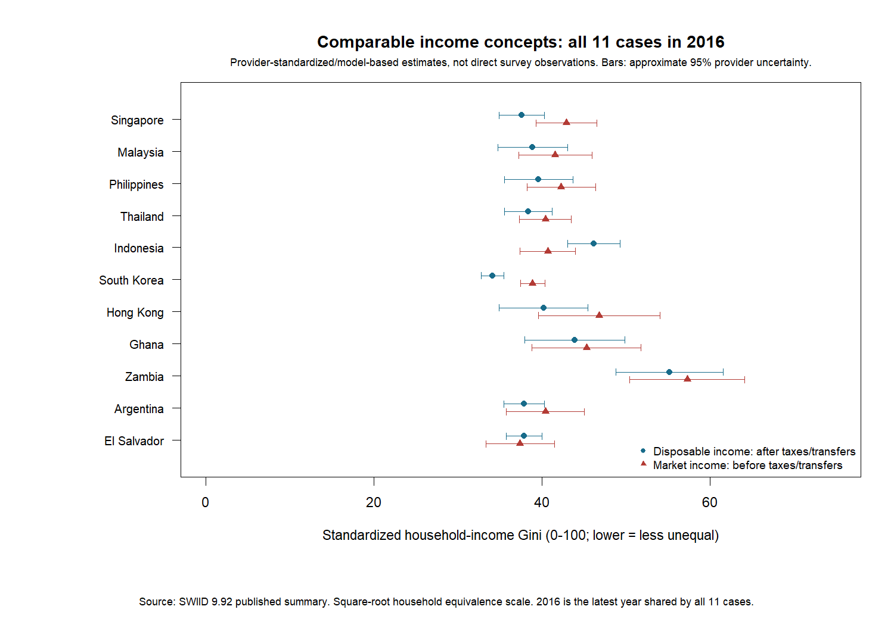
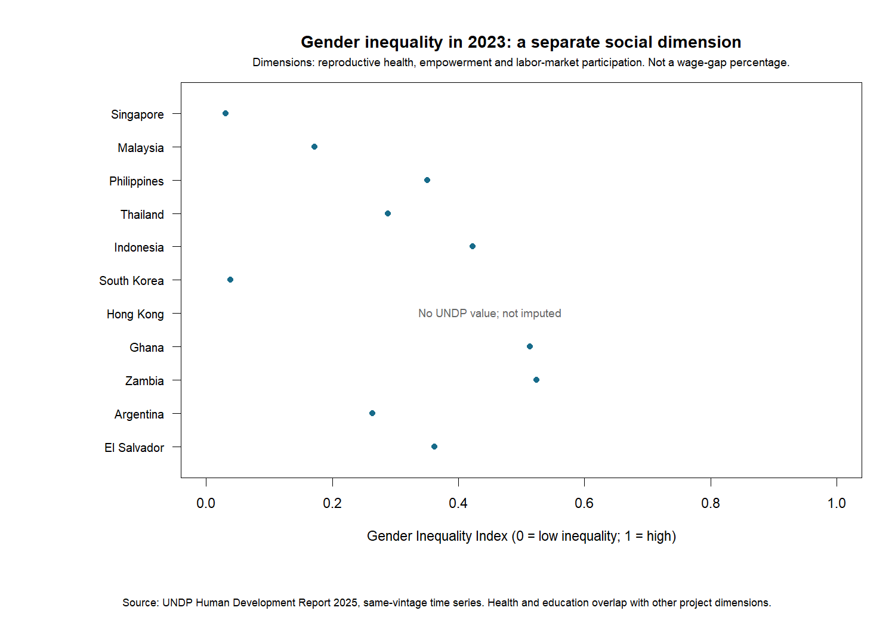
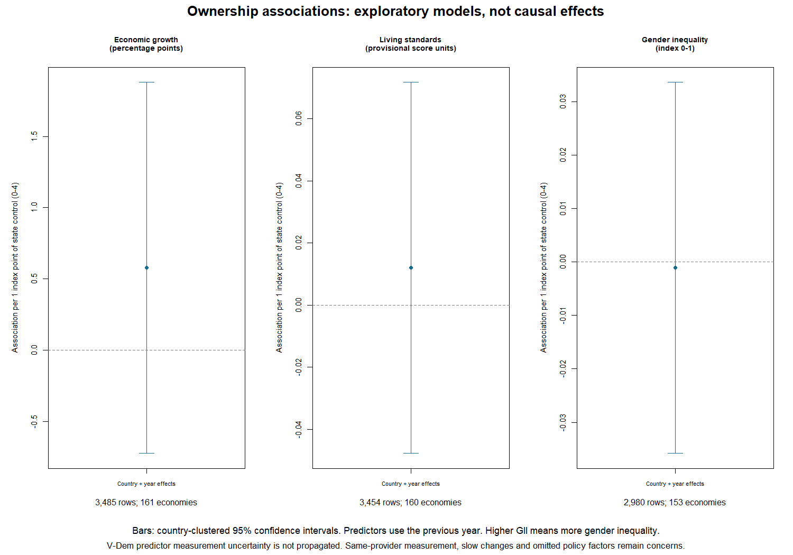

Three separate improvements: state ownership/direct control, standardized income-inequality estimates, and gender inequality. The data types and assumptions differ. None is presented as a complete development score.
| Measure | Plain meaning | Important limit |
|---|---|---|
| V-Dem ownership/control | Expert assessment of how much important capital/sectors the state owns or controls | Not an ownership percentage or a full industrial-policy measure |
| SWIID inequality summaries | Modeled estimates standardized toward the same household-income concepts | Not direct survey observations; uncertainty is shown; draw-based regression is withheld |
| UNDP gender inequality | Published composite of reproductive health, empowerment and labor-market disadvantage | Not a wage-gap percentage; overlaps other dimensions; Hong Kong missing |
| Case | Ownership: last year | SWIID: last year | Gender index: last year |
|---|---|---|---|
| Singapore | 2025 | 2024 | 2023 |
| Malaysia | 2025 | 2022 | 2023 |
| Philippines | 2025 | 2023 | 2023 |
| Thailand | 2025 | 2024 | 2023 |
| Indonesia | 2025 | 2025 | 2023 |
| South Korea | 2025 | 2024 | 2023 |
| Hong Kong | 2025 | 2021 | No value; not imputed |
| Ghana | 2025 | 2016 | 2023 |
| Zambia | 2025 | 2022 | 2023 |
| Argentina | 2025 | 2024 | 2023 |
| El Salvador | 2025 | 2023 | 2023 |
“Last year” is coverage information, not permission to compare different latest years as if they were the same date.





The supplied draw formats did not pass the project scale/summary-concordance audit. No arbitrary rescaling or replacement draws were used. The published summaries remain descriptive, provider-modeled estimates. This unresolved issue should be clarified before using these draws in statistical inference.
Sources: V-Dem Country-Year v16, SWIID 9.92 / Solt (2020), UNDP Human Development Report 2025, and IMF Investment and Capital Stock Dataset (May 2021). These are research transformations, not official provider interpretations.